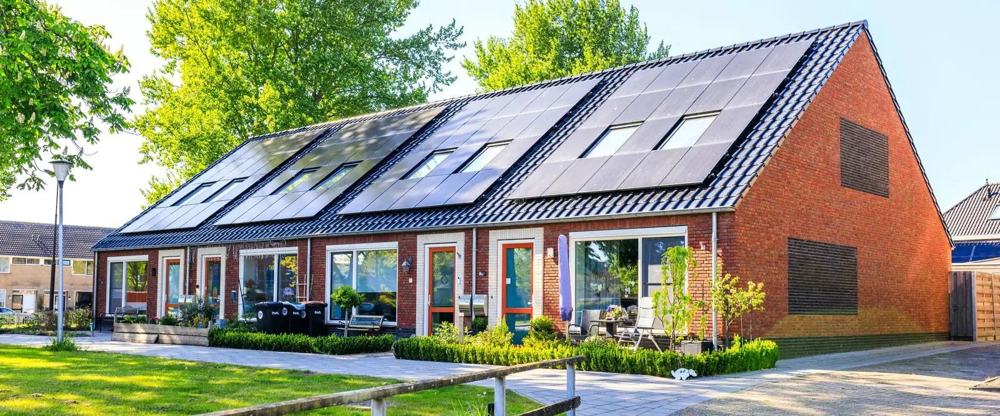
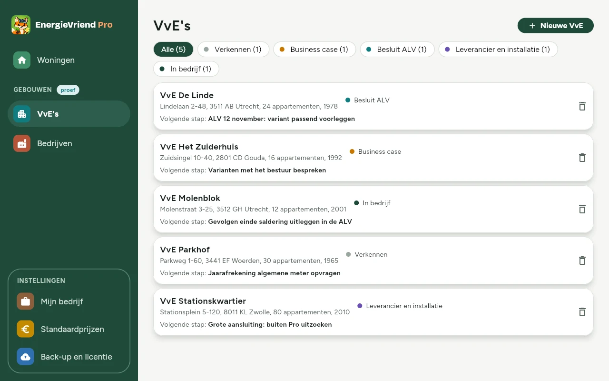
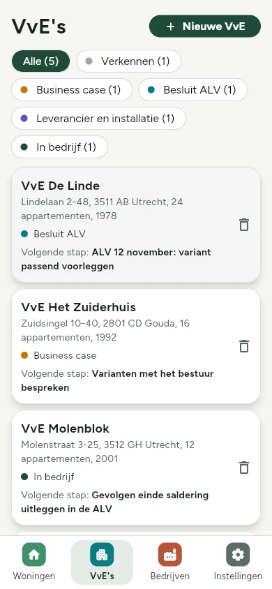
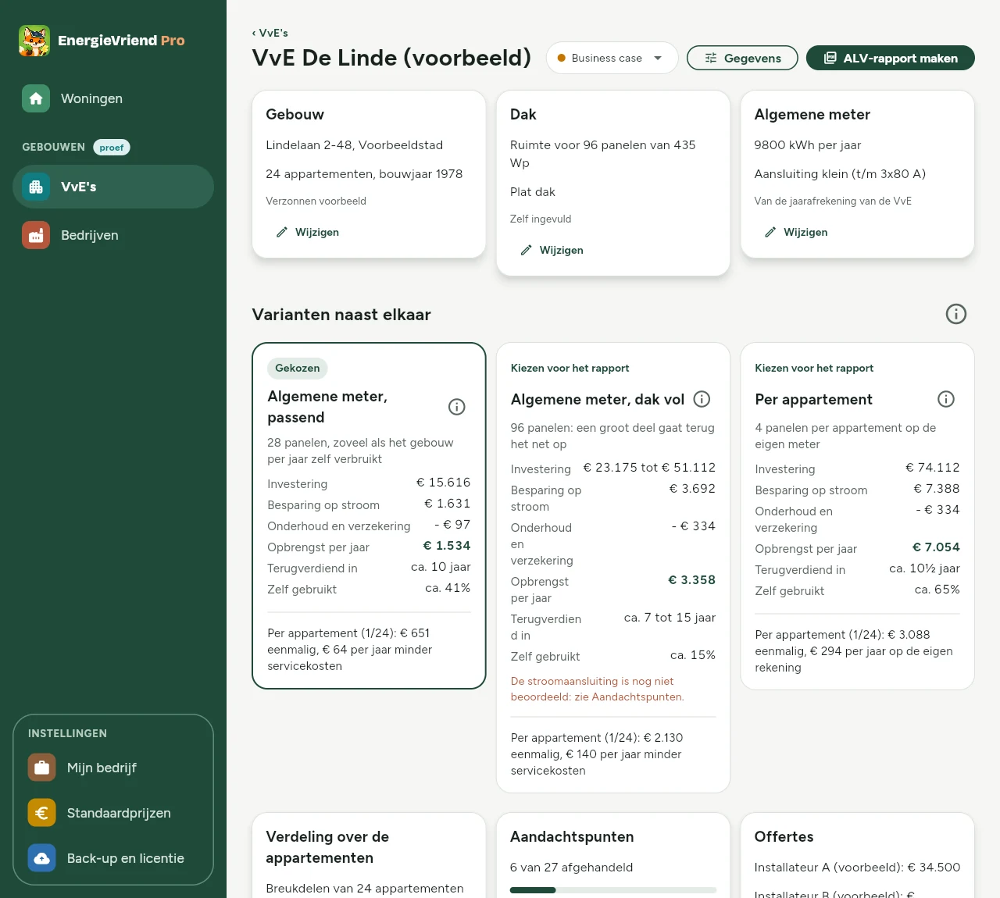
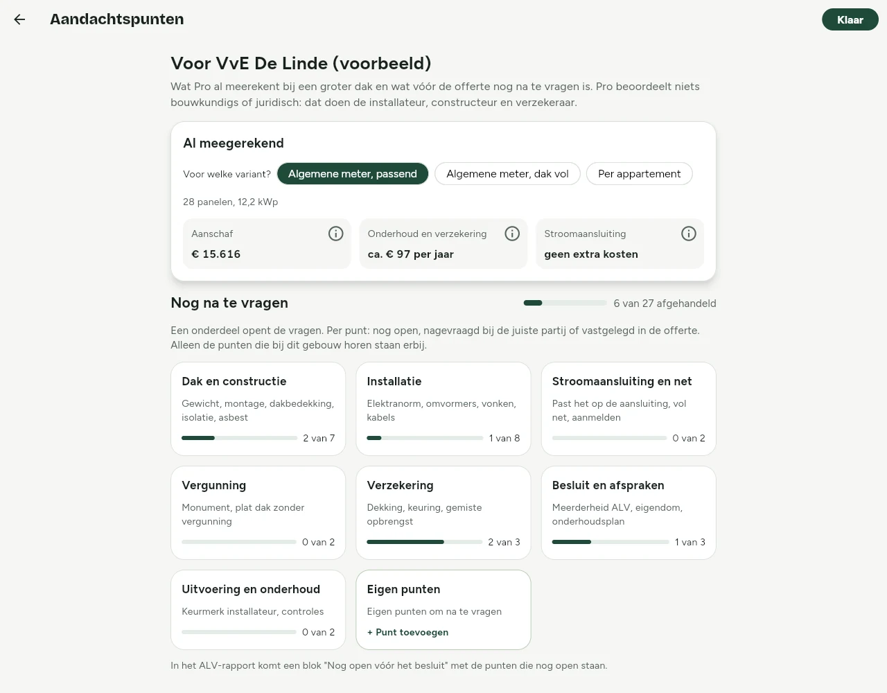
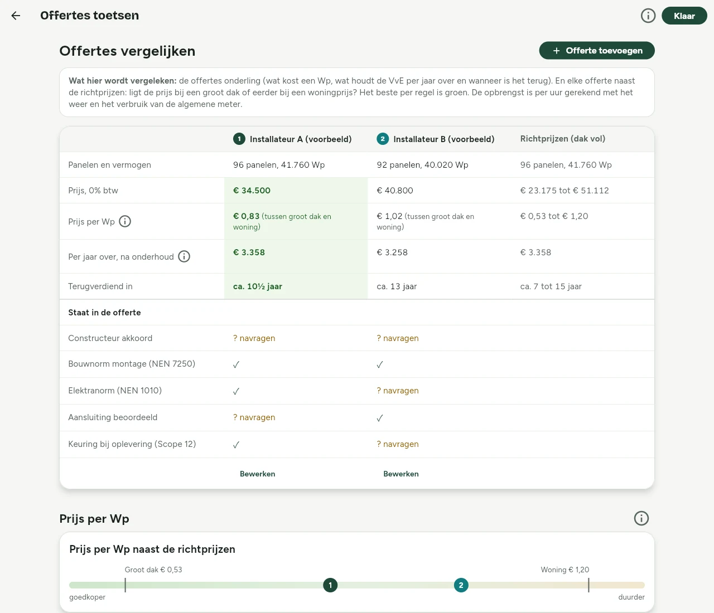
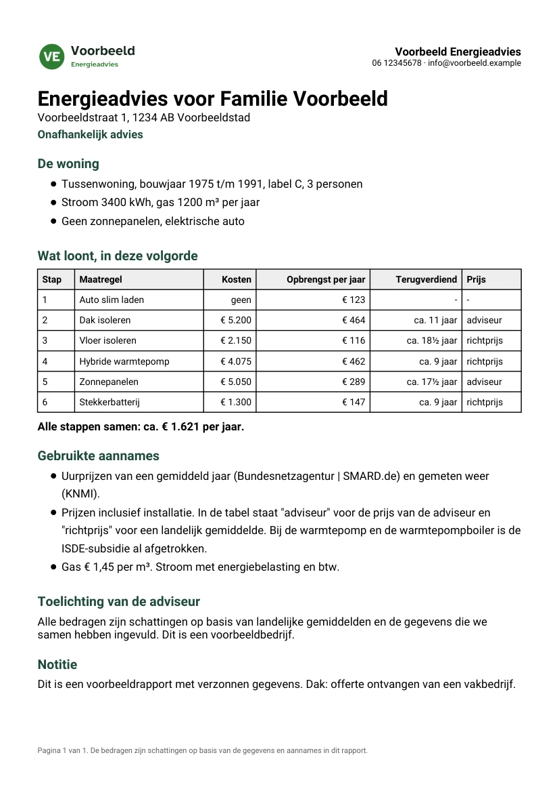

Voor wie is dit? EnergieVriend Pro is voor professionals die voor anderen rekenen: u adviseert de bewoner van een woning, het bestuur van een VvE of de ondernemer van een bedrijfspand. Wilt u zelf weten wat er loont voor uw eigen huis? Dan is er de app: EnergieVriend voor thuis.
Zelf uitzoeken met losse hulpmiddelen? Pro maakt er één plan van.
Veel adviseurs rekenen met losse hulpmiddelen: een check voor isolatie, een rekentool voor de batterij, een opbrengstberekening voor het dak en een eigen spreadsheet om het samen te voegen. Dat werkt, maar het kost tijd en de uitkomsten passen niet altijd op elkaar.
Stappen die op elkaar doorrekenen
Na een warmtepomp verandert wat zonnepanelen opleveren; na zonnepanelen verandert wat een batterij oplevert. Losse berekeningen tellen besparingen op die elkaar deels overlappen. Pro rekent elke stap door op de woning ná de vorige stap, uur voor uur.
Ook de vragen van na de saldering
Vanaf 2027 vraagt uw klant niet alleen naar isolatie en panelen, maar ook: loont een batterij, slim laden, een dynamisch contract? Pro zet dat in hetzelfde plan, naast isolatie, warmtepomp en boiler.
Uw prijzen, uw rapport
U rekent met uw eigen standaardprijzen of met het bedrag uit een offerte, niet met een landelijk gemiddelde. De klant krijgt een rapport met uw naam en logo. Het is uw advies, geen algemene uitdraai.
Klanten bewaren
Na het bezoek past u een bedrag of een keuze aan en het hele plan rekent opnieuw. U hoeft niets opnieuw in te vullen.
Wat Pro niet is: geen energielabel en geen gecertificeerd maatwerkadvies volgens NTA 8800. Heeft uw klant dat nodig, bijvoorbeeld voor subsidie of financiering, dan gebruikt u daarvoor labelsoftware.
Zo ziet het eruit


Wat u ermee doet
Eén plan per klant
U vult de woning, de VvE of het bedrijf van uw klant in en ziet direct wat er loont en in welke volgorde, wat het kost en wat het per jaar oplevert. Achter het ⓘ staat hoe Pro rekent.
Uw prijzen
Zet uw eigen standaardprijzen in en vul per klant het bedrag uit een offerte in. U ziet of het uw prijs is of een richtprijs. Bij een VvE staat de offerteprijs naast de richtprijzen.
Uw rapport
Een PDF met uw naam, contactgegevens en logo, voor de klant of als ALV-rapport voor een VvE. "Onafhankelijk advies" staat er alleen op als u dat zelf aanzet.
Pro Gebouwen: VvE's en bedrijfsdaken
Een opbrengstberekening voor het dak is snel gemaakt. Wat het bestuur wil weten is lastiger. Wat kost het per appartement? Op de algemene meter of per appartement? En welke offerte is redelijk?
Met Pro Gebouwen rekent u dat door zonder eigen spreadsheet. U maakt er een rapport van voor de ledenvergadering, met een blad per appartement.
Ook voor een bedrijfsdak. Dezelfde berekening, met wat bij een bedrijf anders is: de btw (21% op een bedrijfspand, wel of niet terug te vragen), het verbruik overdag en de energiebelasting van de eigen schijf. Het restdak staat als aparte regel en u maakt een rapport voor de ondernemer. Pro rekent alleen kleinverbruik (aansluiting t/m 3x80 A) en noemt geen bedragen van fiscale regelingen of subsidies.
Tijdens de proef van Pro probeert u Pro Gebouwen gewoon mee. Heeft u Pro al, dan probeert u Pro Gebouwen 30 dagen op het moment dat u het nodig heeft.



Voorbeeldrapport

Zo ziet het rapport voor uw klant eruit, met een verzonnen klant en een verzonnen adviesbedrijf. Het logo, de naam en de toelichting zijn die van u.
Uw klantgegevens blijven bij u
Er is geen account en geen server van ons waar uw klantgegevens heen gaan. Alles staat in uw eigen browser. Wij kunnen er niet bij.
Omdat de gegevens alleen op uw apparaat staan, maakt u zelf af en toe een back-up. Die is standaard versleuteld met een wachtwoord dat u kiest. Pro herinnert u daar rustig aan.
Meer in het privacybeleid.
Eerlijk over de bedragen
De bedragen zijn schattingen op basis van gemiddelden en wat u zelf invult. Het is geen offerte en geen belofte van een besparing. U blijft verantwoordelijk voor het advies dat u uw klant geeft. Zie de gebruiksvoorwaarden.
Proberen en licentie
- U probeert Pro 30 dagen zonder iets te betalen of aan te maken.
- Daarna werkt Pro met een jaarlicentie per gebruiker. Elke gebruiker krijgt een eigen code, die op twee apparaten tegelijk werkt.
- Een jaarlicentie kost € 290 excl. btw (€ 350,90 incl. btw) per gebruiker. Na een jaar verlengt u tegen de dan geldende prijs; dat gaat niet vanzelf.
- U bestelt de licentie op de bestelpagina en betaalt vooraf via Mollie. U ziet de licentiecode direct en krijgt hem per e-mail, net als de factuur. Een licentie is er alleen voor bedrijven en organisaties.
- Pro Gebouwen (VvE's en bedrijfsdaken) is een aparte jaarlicentie bovenop Pro: € 190 excl. btw per gebruiker per jaar (€ 229,90 incl. btw). U vinkt het aan bij het bestellen van Pro of bestelt het later bij in Pro (Instellingen). U betaalt dan alleen voor de dagen tot de einddatum van Pro. Beide licenties lopen tot dezelfde dag en verlengt u samen.